El día de v1, probado como lo vivirá la gente
He usado PACE como cinco personas distintas el día que salga la versión de pago y al comprar el de por vida, en español y en inglés, en el móvil y en el ordenador. Encontré un fallo serio y lo arreglé. Había cuatro cosas que decidías tú: elegiste 1B, 2A, 3B y 4A, y ya están montadas.
Montado: lo que elegiste
Cada cambio tiene su prueba automática, y he comprobado que esa prueba se pone en rojo si quito el cambio. Las fotos son del móvil (360 px); «antes» es la app de hoy sin el cambio.
«Borrar todo» ya no quita PACE completo
Quien pagó el de por vida y borra sus datos empieza de cero (sus días, sus rutinas y sus logros se van, como dice el aviso), pero sigue teniendo PACE completo. El aviso no cambia. La página de privacidad ya lo cuenta: el código solo se va si se limpian los datos del navegador.
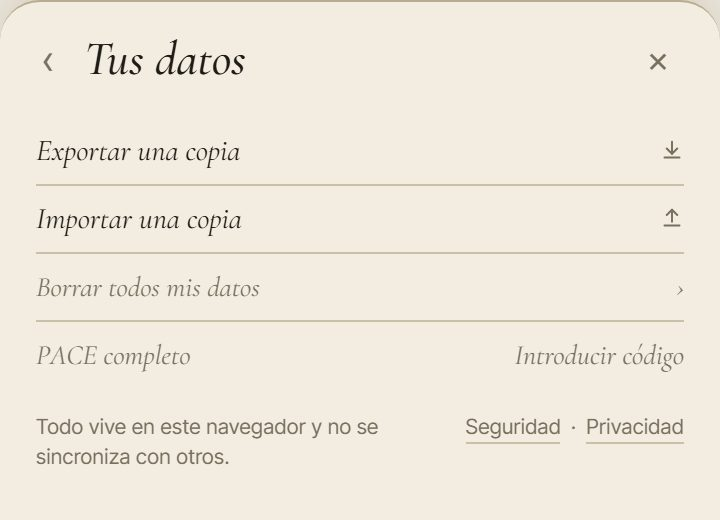
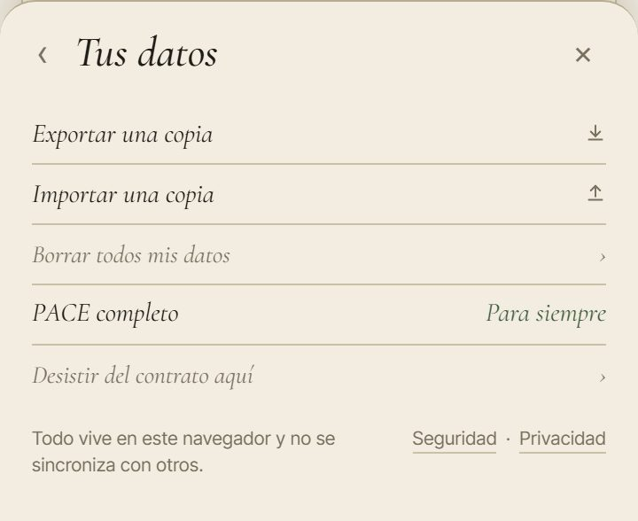
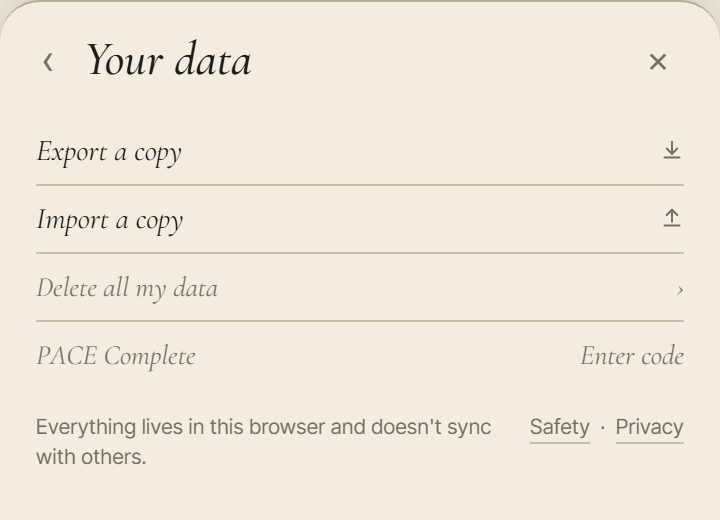
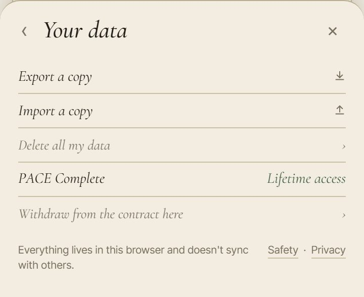
Antes: «Introducir código». Ahora: «Para siempre».
El aviso del día de v1 cuenta sus rutinas propias
A quien ha creado rutinas propias, el aviso le dice: «Tus rutinas propias se quedan guardadas; desde el (fecha) se abren con PACE completo». En inglés: «Your own routines stay saved; from (date), they open with PACE Complete». A quien no tiene ninguna, no se lo dice.
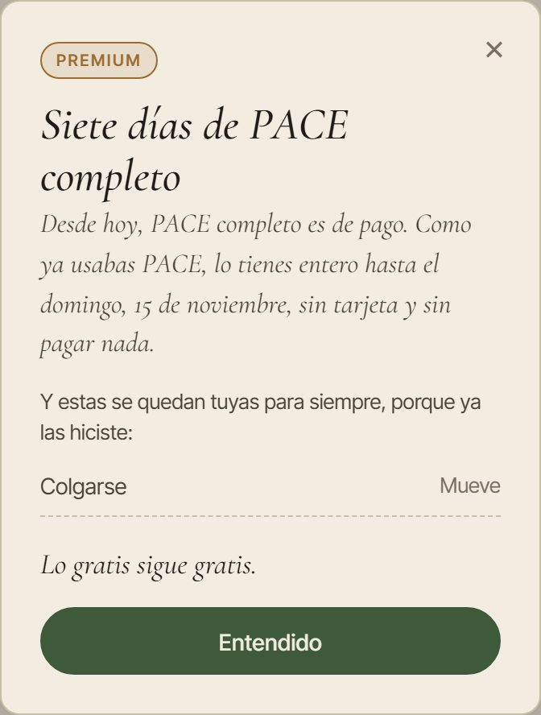
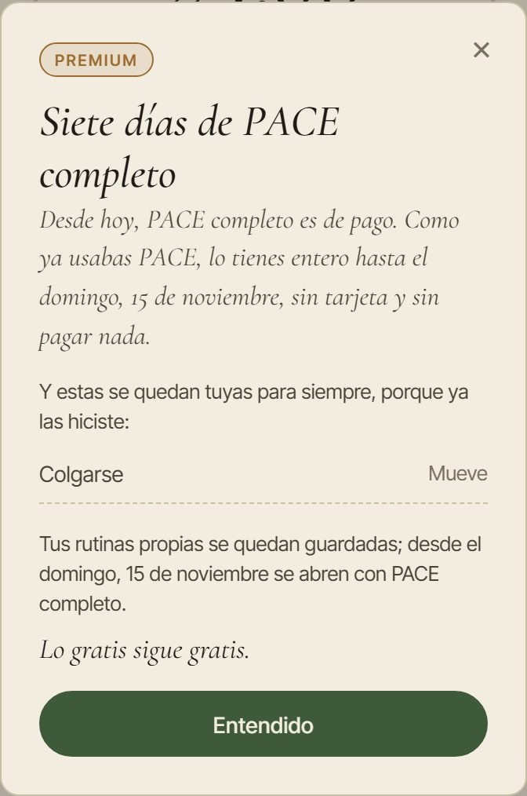
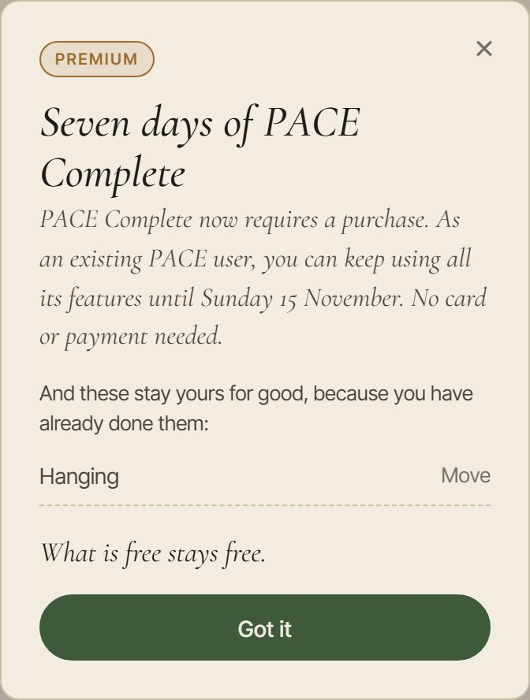
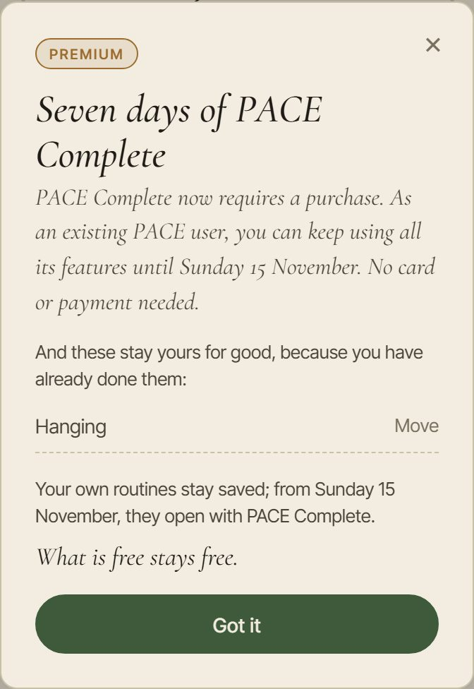
Sin tienda, «Pronto podrás tenerlo aquí»
Si el día de v1 la app de Android o de iPhone aún no tiene su compra, lo de pago se cierra igual, y la hoja dice «Pronto podrás tenerlo aquí» («You’ll be able to get it here soon») en vez de «Llega con la versión 1». Hasta v1 sigue diciendo «Llega con la versión 1».
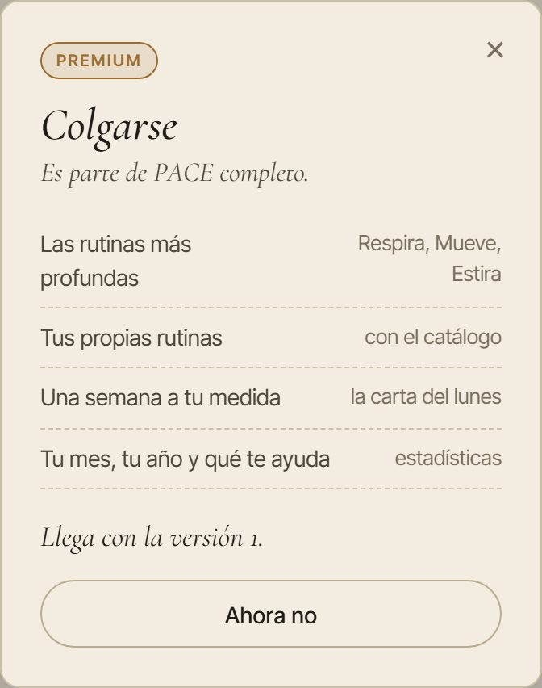
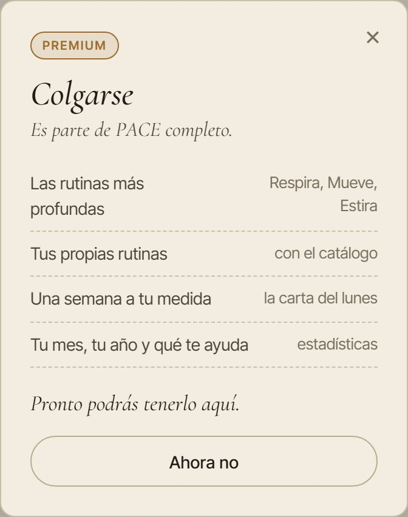
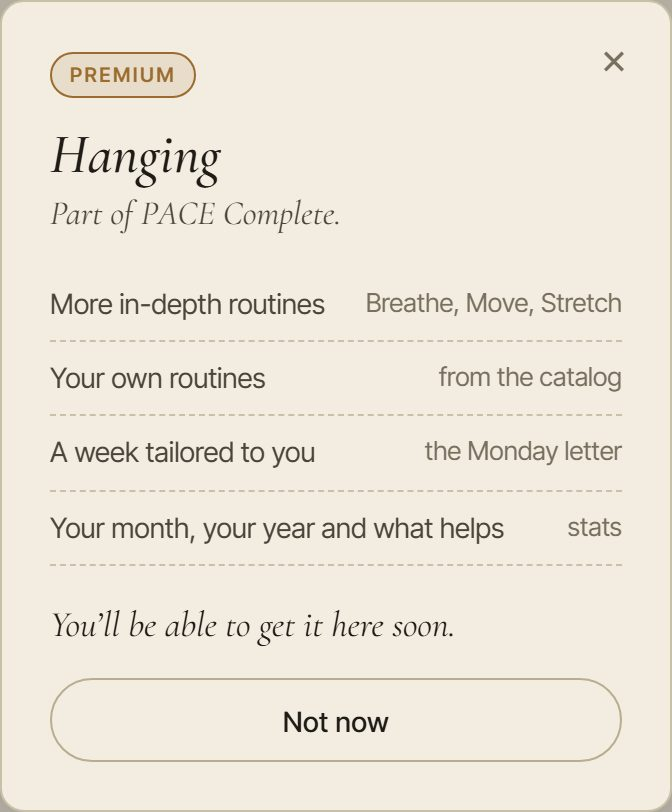
Una lista para el día de v1
Todo lo que dice «hasta la versión 1» está apuntado junto a lo que dirá después: en la app, la hoja de PACE completo y la bienvenida; en /premium, el plato del mensual, la nota del precio, «Dónde funciona tu compra» y la pregunta de Android; y en /beta, la nota de los testers y «¿Y mientras dura la prueba?», que desaparece. El día de v1 se cambian a la vez el interruptor de la app y una línea en cada página, y la comprobación automática no deja subir nada si falta uno, o si alguien escribe un texto nuevo que diga «v1» sin decir qué dirá después.
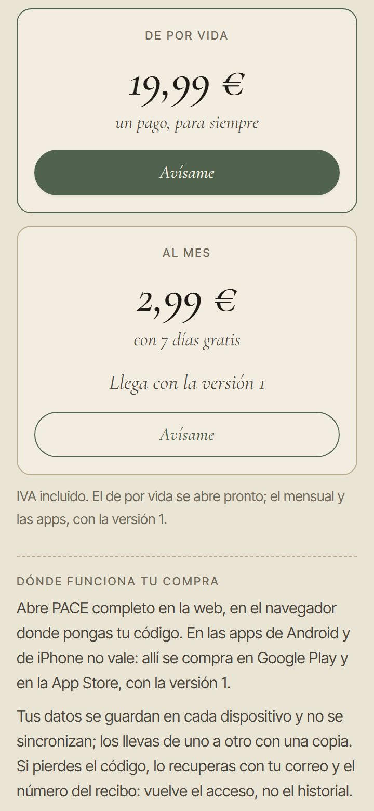
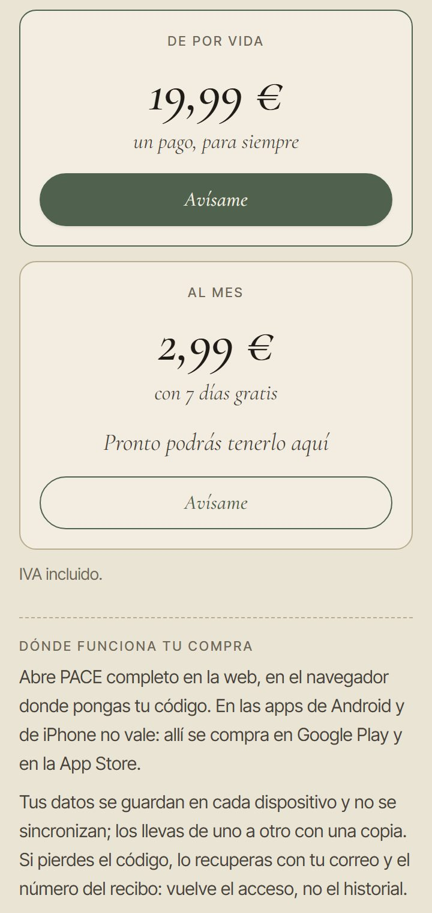
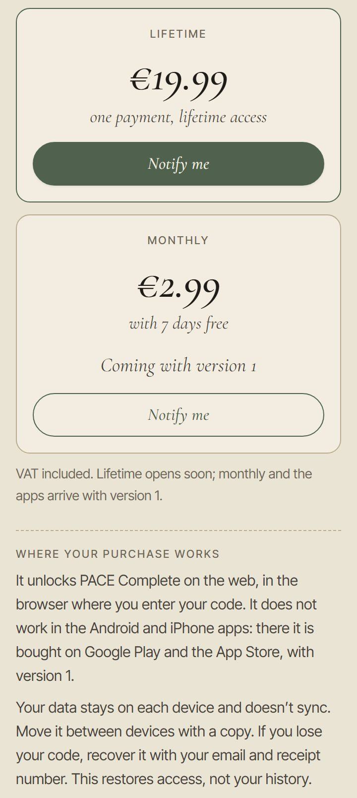
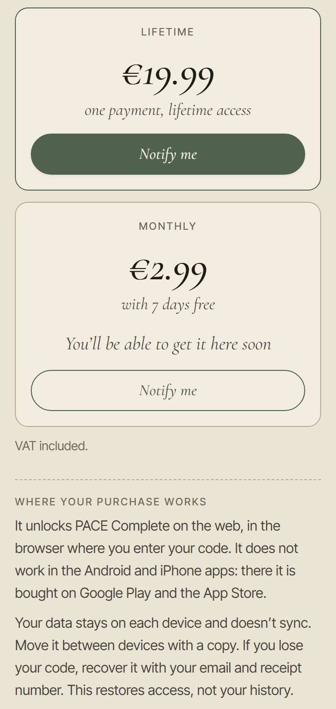
Una frase que no nombra v1 no la ve: «Cuando llegue el plan al mes» va con el enlace del mensual, no con v1.
Lo que va bien
- La tester con su código: no ve ningún aviso, lo tiene todo y Ajustes dice «Para siempre».
- Quien compra el de por vida: /premium → pago → la página de gracias le da su código → PACE se abre completo. En otro navegador, con su correo y su recibo, lo recupera y vuelve a abrirse.
- Quien usaba PACE gratis: le sale una vez «Siete días de PACE completo», con la fecha y las rutinas de pago que ya hizo. Pasada la semana conserva sus días, sus logros, sus rutinas y esas de pago.
- Quien vuelve tras meses: su semana empieza el día que vuelve.
- Quien está probando el mensual: dos días antes le avisa, una vez, con el día y el precio.
- Ningún error en la app, y la hoja de compra cabe en el móvil sin scroll.
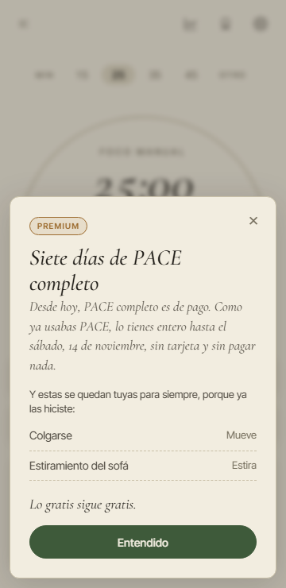
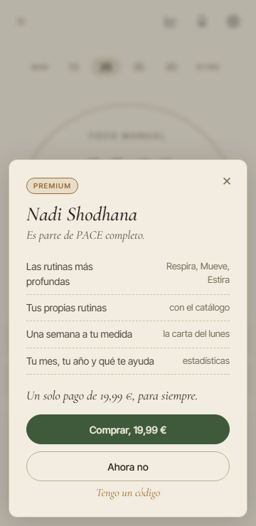
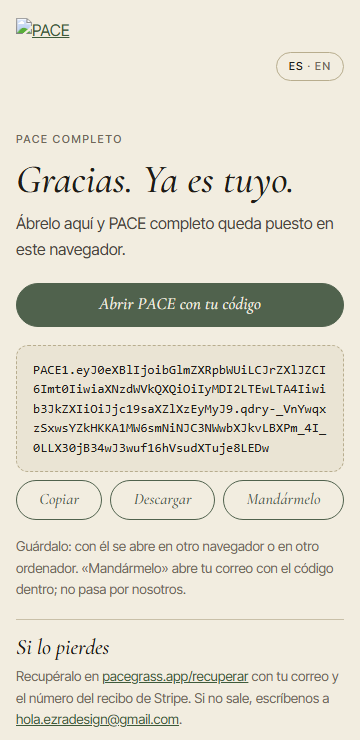
El fallo que arreglé
Una copia vieja regalaba otra semana entera
Si alguien guardaba una copia de sus datos antes del día de v1 y la volvía a cargar después, PACE le daba otra vez siete días de todo gratis, con su aviso. Y podía repetirlo cuantas veces quisiera. Al revés también fallaba: cargar la copia de otro aparato le quitaba las rutinas de pago que se le habían quedado.
Ahora la copia trae sus datos, pero la semana y las rutinas que se quedan siguen como estaban, y si la copia tiene alguna de pago que hizo antes, se suma.
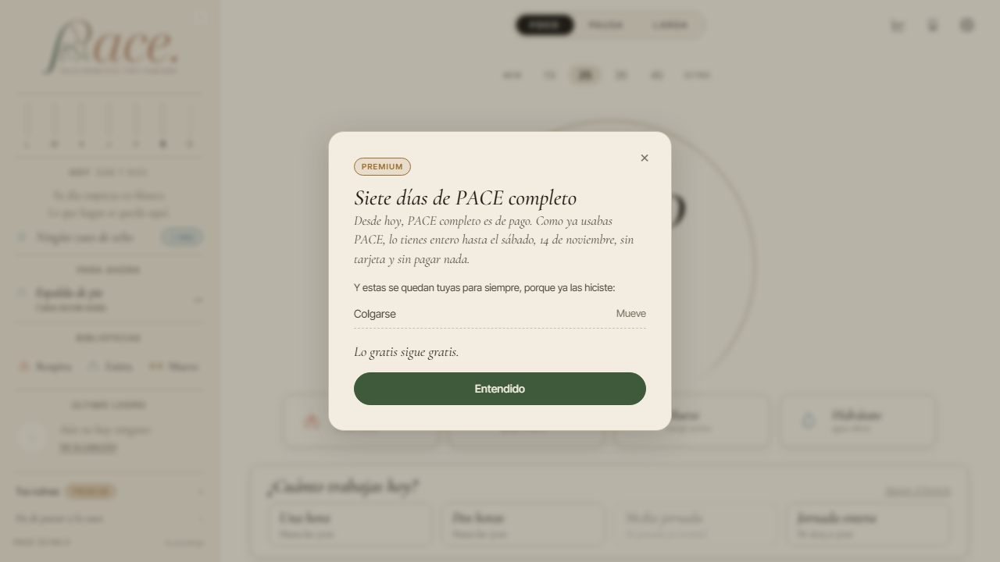
Lo que decidiste
1. «Borrar todo» quita también la compra, y no lo dice
El aviso dice que se borran «tus días, tus rutinas y tus logros». Quien pagó el de por vida pierde PACE completo en ese navegador sin enterarse; lo recupera con su código o en /recuperar.
- A Cuando hay código, el aviso añade una frase: «También se quita PACE completo de este navegador; tu código sigue valiendo». Recomendada
- B Que «Borrar todo» no quite el código. Elegida
- C Dejarlo como está.
2. Sus rutinas propias se cierran y el aviso no lo cuenta
Quien creó rutinas propias antes de v1 las tiene abiertas su semana; luego se quedan guardadas pero cerradas. El aviso del día de v1 no lo menciona.
- A Una línea en el aviso: «Tus rutinas propias se quedan guardadas; desde el (fecha) se abren con PACE completo». Recomendada Elegida
- B Dejarle abiertas para siempre las que creó antes de v1, como las de pago que ya hizo.
- C Dejarlo como está.
3. En el móvil, si la tienda aún no está, nadie puede comprarlo
Lo he visto haciendo que el navegador se comporte como la app de Android (no en un móvil de verdad). Si el día de v1 la app de Android o de iPhone todavía no tiene la compra de su tienda, lo de pago se cierra y la hoja dice «Llega con la versión 1»: solo hay «Ahora no», sin botón de compra ni sitio para un código.
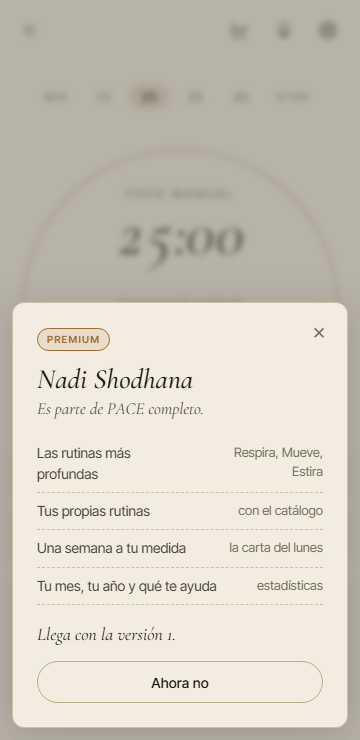
- A En una app sin su tienda lista, PACE completo sigue abierto como ahora. Recomendada
- B Cambiar el texto por «Pronto podrás tenerlo aquí». Elegida
- C No sacar v1 en las apps hasta que tengan su compra.
4. Textos que dicen «hasta v1»
Hoy son verdad, pero el día de v1 hay que cambiarlos a la vez: la nota de /premium («Hasta la versión 1, PACE completo está abierto…»), el plato del mensual («Llega con la versión 1»), la hoja de la app y la bienvenida.
- A Una lista para el día de v1 que los cambie todos juntos. Recomendada Elegida
- B Cambiarlos cuando llegue el momento, sin lista.
Y una cosa que vigilo
El aviso de la prueba del mensual dice «si quieres seguir, no hagas nada», y /premium promete que se cancela desde Ajustes. Eso solo es verdad si ese día está puesto el enlace de Stripe para gestionar la suscripción. Sin él, el aviso no tiene botón para cancelar. He dejado una prueba que se pone en rojo si alguien enciende el mensual sin ese enlace.
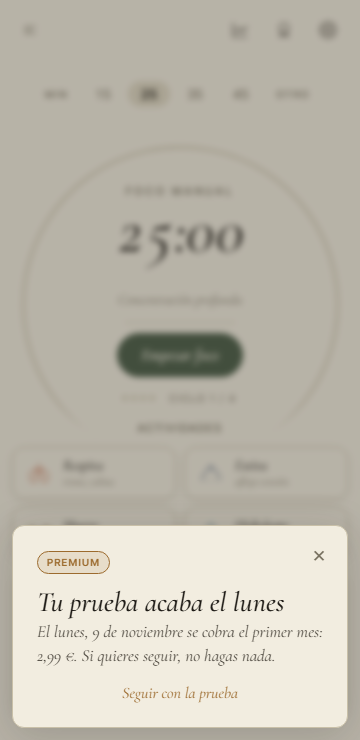